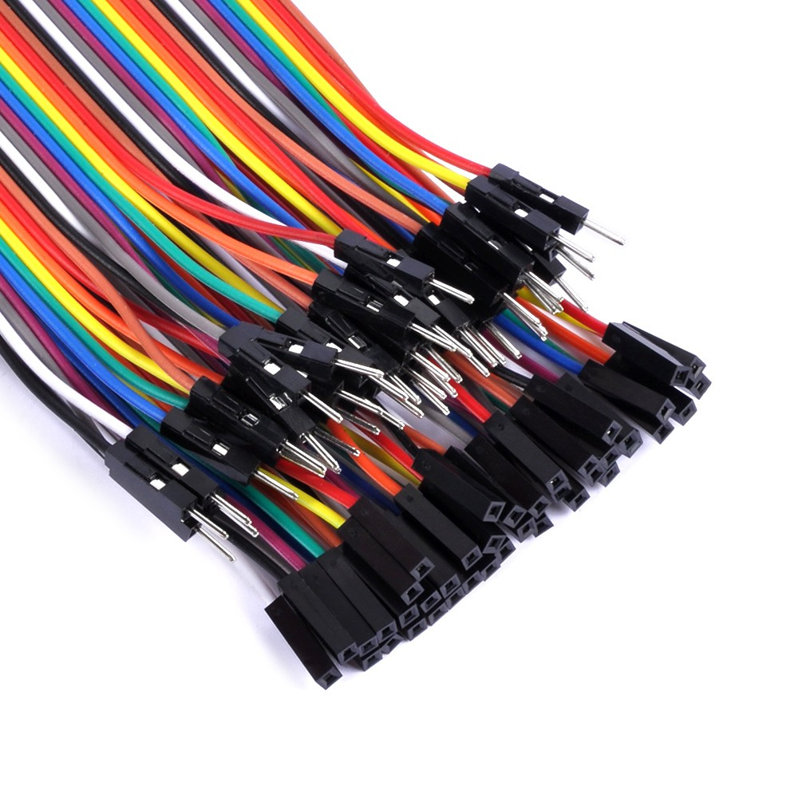

Materiales
Bienvenidos a la sección de Materiales
Este apartado es exclusivo para hablar de los materiales y/o herramientas que són imprescindibles para llevar a cabo nuestro proyecto.
Hemos realizado una tabla en la que se puede leer una lista con todos los componentes físicos del proyecto y su función.
Placa Arduino UNO
Es el cerebro del proyecto, la placa la conectamos al ordenador y le introducimos el código para que envíe las órdenes a todos los componentes.

Motor de 2 canales y placa de protección servo de 16 canales
Esta placa se conecta sobre la placa Arduino, en ella conectamos los motores además del servo y los LEDS.

Servo SG90
Es el componente que permite al sensor de ultrasonidos realizar el movimiento de “Radar”, de derecha a izquierda y viceversa.
Motores
Esta pieza recibe los impulsos de la placa base, con lo que realiza la fuerza para mover las ruedas.
Cables
Su función es conectar los diferentes componentes a la placa Arduino UNO.
Batería
Funciona como fuente de alimentación de la placa Arduino UNO, cuando esta no está conectada al ordenador.